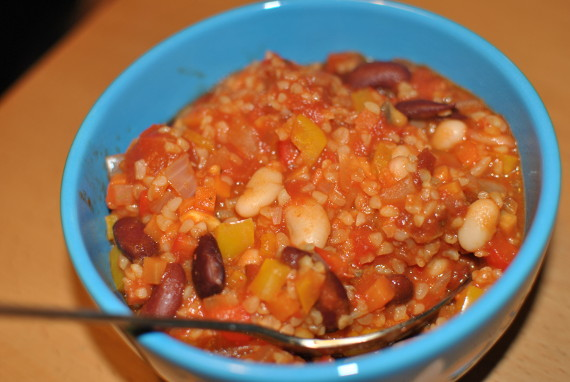

Chili sin carne

- Zubereitung: ca. 45 Minuten
- Für 6 Portionen
Zutaten
- 175 g Bulgur
- 275 ml Tomatensaft
- 3 Zwiebeln
- 3 große Knoblauchzehen
- 200 g Möhren
- 150 g Champignons
- 2 Paprikaschoten (1 rot, 1 gelb)
- 50 g getrocknete Tomaten (in Öl eingelegt)
- 2 EL Olivenöl
- 2 EL Chilipulver
- 1 EL gemahlener Kreuzkümmel
- 3 EL Tomatenmark
- 400 ml Gemüsebrühe
- 800 g geschälte Tomaten (Dose)
- 425 g Kidneybohnen (Dose)
- 425 g weiße Bohnen (Dose)
- 1 Bund Koriander
- 125 g saure Sahne
- Cayennepfeffer
Zubereitung
- Bulgur in eine Schüssel geben. Tomatensaft in einem kleinen Topf aufkochen lassen. Über den Bulgur gießen, untermischen und mit einem Teller zugedeckt 20 Minuten quellen lassen.
- Inzwischen die Zwiebel und Knoblauchzehen schälen und fein würfeln bzw. hacken. Die Möhren putzen, waschen, schälen und fein würfeln. Die Champignons putzen und fein hacken. Die Paprikaschoten halbieren, entkernen, waschen und fein würfeln. Eingelegte
Tomaten abtropfen lassen und ebenfalls fein würfeln.
- Das Olivenöl in einem Topf erhitzen. Gehackte Zwiebeln und Knoblauch darin glasig dünsten. Möhrenwürfel und gehackte Champignons dazugeben und unter Rühren etwa 3 Minuten andünsten.
- Chili, Kreuzkümmel und Tomatenmark unterrühren und kurz mit andünsten. Die Gemüsebrühe dazugeben. Die Tomaten mit einem Messer direkt in der Dose zerkleinern und ebenfalls in den Topf geben. Getrocknete Tomaten, Bulgur und Paprikawürfel untermischen.
Alles aufkochen und bei kleiner Hitze unter häufigem Rühren etwa 15 Minuten garen.
- Kidneybohnen und weiße Bohnen in ein Sieb geben, gründlich unter fließendem Wasser abspülen und abtropfen lassen. Beide Bohnensorten in den Topf geben, vorsichtig untermischen und im Chili erhitzen.
- Koriander waschen und trockenschütteln. Die Blätter abzupfen und hacken. Mit der sauren Sahne verrühren, salzen und pfeffern. Das Chili mit Cayennepfeffer und Salz abschmecken und mit der Koriandersahne servieren.